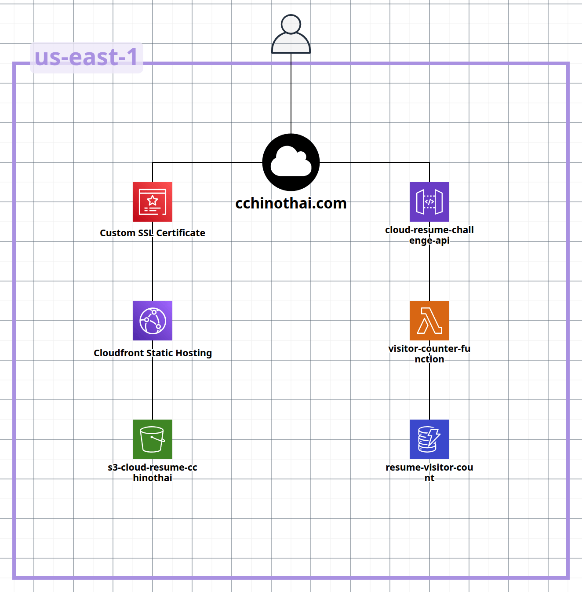

Architecture Diagram
This project implements a fully serverless, event-driven architecture leveraging AWS cloud services for scalability, high availability, and cost optimization.
Challenge: Configure custom domain with HTTPS encryption
Solution:
Challenge: Deploy static content with global CDN distribution
Solution:
Challenge: Build scalable visitor counter with zero server management
Solution:
Challenge: Ensure reproducible, version-controlled infrastructure
Solution:
Challenge: Ensure code reliability before deployment
Solution:
Challenge: Automate testing and deployment workflows
Solution:
Entire infrastructure defined and managed through Terraform code
Zero server management, automatic scaling, pay-per-use pricing
HTTPS encryption, IAM least privilege, private S3 buckets with OAC
Tests run automatically, infrastructure deploys on merge to main
Global CDN distribution, HTTP/2, HTTP/3, optimized caching
On-demand DynamoDB, Lambda pay-per-invocation, CloudFront free tier
Designed and implemented a production-ready, serverless architecture using AWS managed services for scalability and reliability.
Mastered Terraform to define, version, and deploy cloud infrastructure programmatically with proper state management.
Built automated CI/CD pipelines that enforce testing, enable rapid iteration, and ensure consistent deployments.
Developed serverless Python applications with proper error handling, testing, and integration with AWS services.
Applied cloud security best practices including encryption, IAM policies, private resources, and least-privilege access.
Debugged complex issues across DNS, SSL, CORS, caching, and deployment workflows with systematic troubleshooting.